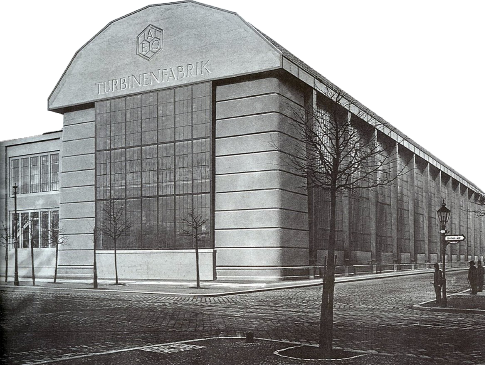

Walter Gropius
Walter Gropius (1883-1969) è stato un celebre architetto e designer tedesco, noto soprattutto per essere il fondatore della Scuola di Bauhaus, un'istituzione che ha rivoluzionato l'arte, l'architettura e il design nel XX secolo.
Gropius ha sostenuto l'idea di unire l'arte e l'industria, promuovendo il concetto di "architettura totale" in cui l'arte, l'artigianato e la tecnologia collaborano per creare un'estetica moderna e funzionale. Le sue opere architettoniche, come il Bauhaus Building a Dessau, sono considerate icone dell'architettura modernista.
La sua influenza nell'ambito del design e dell'architettura ha lasciato un'impronta duratura, e il suo pensiero innovativo continua a essere studiato e apprezzato in tutto il mondo.
Lavori
Bauhaus Building (Bauhaus Dessau) - Dessau, Germania (1926): Questo edificio è considerato uno dei capolavori dell'architettura modernista ed è stato sede della scuola Bauhaus durante la direzione di Gropius. L'edificio è caratterizzato da un design funzionale e razionale, con forme geometriche, piani aperti e l'uso creativo di materiali come il vetro e l'acciaio.
La Casa del Direttore (Direktorhaus) - Dessau, Germania (1926): Questa casa, situata accanto al Bauhaus Building, è stata progettata da Gropius per se stesso quando era direttore della scuola. Rappresenta un esempio dell'applicazione dei principi modernisti all'architettura residenziale.
The AEG Turbine Factory (Allgemeine Elektricitäts-Gesellschaft Turbinenfabrik) - Berlino, Germania (1909): Questa fabbrica è uno dei primi progetti di Gropius ed è considerata una delle prime opere dell'architettura industriale moderna. Fu un progetto di grande innovazione per l'epoca, con ampi spazi interni e una struttura in cemento armato.